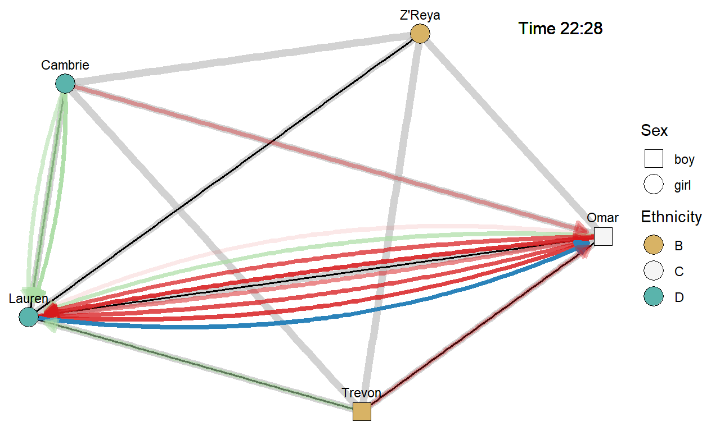
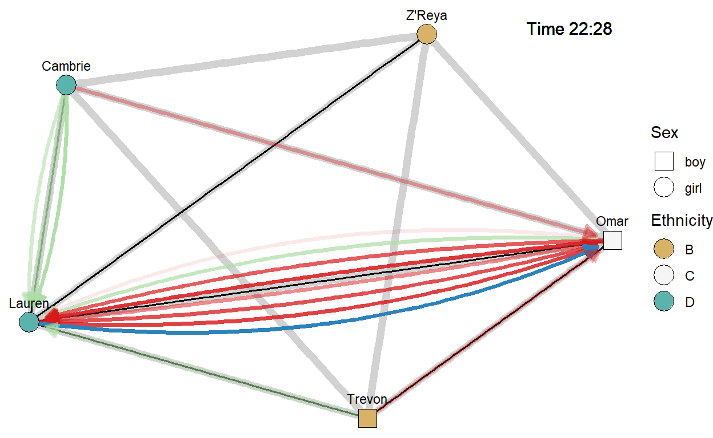
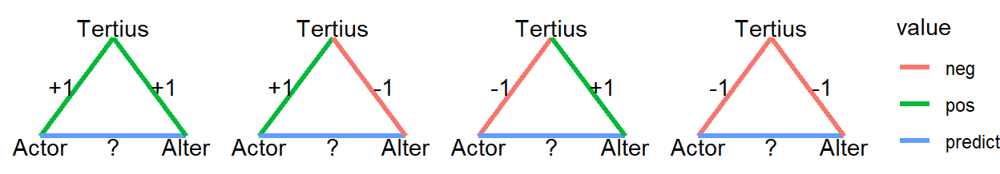

In the preceding sessions, we have tried to predict a characteristic of a pupil (loudness, game app adoption). In network analytic terms, we have focused on the nodes of the network.
Let us now turn to the lines in the network, more specifically, the statements that pupils make toward each other. Can we predict if a statement made by one pupil to another pupil is negative or positive (not negative)?

The above figure highlights (blue arrow) one example of a statement for which we want to predict if it is negative or positive. This is Lauren’s statement to Omar at time 22:28.
It shows the statement within its network context:
In this session, we will use the data frame utterances in our analyses. Have a look at the part of this data set that represents the utterances depicted in the previous figure (pupil IDs are replaced by their first names).
Exercises
Can you trace the first few rows of this table in the previous figure?
What is the dependent/outcome variable that we are going to predict?
Each row in the data set is an observation for our analyses. Which combination of variables (columns) uniquely identifies an observation? How is this different from the previous sessions?
A tie is equal to a pair of nodes. For lines, the order of nodes (from versus to) does not matter, but the order matters for arcs (arrows). Instead of analyzing characteristics of nodes (pupils), we are now going to analyze a characteristic of pairs of nodes. In our example, whether a statement is positive or negative.
How can we predict if Lauren’s statement on Omar (blue arrow) is positive or negative from the information that we have?

Exercises
Have another look at the network.
Can you formulate hypotheses about the effects of Lauren’s and/or Omar’s characteristics on the valence (positive versus negative) of the statement that we want to predict?
Which statement valence (positive or negative) do you expect given that Lauren and Omar are friends (the fat gray line is hardly visibly) and are currently playing together?
Given the valence of the statements between Lauren and Omar in the preceding 5 minutes, would you expect Lauren’s new statement to be positive or negative?
In the preceding 5 minutes, Lauren received positive statements from Cambrie and Trevon, who said negative things to Omar. Given this situation, would you expect Lauren’s new statement to be positive or negative? Tip: My friend’s enemy…
The four questions in the preceding sub-topic represent different types of effects and different types of independent/predictor variables:
Exercises
Which of the types of independent/predictor variables do you recognize in the above data? Tip: Use the little black triangle to see more variables.
Which ones are missing?
Can you figure out how the variable simil_sex was constructed?
It is relatively straightforward to construct independent variables for sender, receiver, and (dis)similarity effects: Just add the characteristics for sender and receiver or the difference.
Predictors for effects of other ties (friendship, playmate) just include the Yes(1)/No(0) variable used to register friendships and playmates in the basic data sets for pairwise (= lines) information: pairs_const and pairs_dyn.
# Just issue the name of a data set to show its contents.
pairs_constExercise
pairs_const and pairs_dyn to see how friendships and playmate ties are registered.We calculate the independent/predictor variable for the reciprocity effect from the statements that Lauren received from Omar in the 5 minutes preceding Lauren’s new statement. These statements are listed below.
The reciprocity predictor variable is essentially a count of received ties. In our example, a count of negative and/or positive statements received by Lauren from Omar.
Some options:
received_neg in the data set utterances.Exercises
Think about the process that happened: Lauren and Omar exchanged several statements, most of which were negative. What is going on? To which of Omar’s statements do you expect Lauren to respond?
As a consequence, which option for the reciprocity variable do you prefer?
Effects including a third node (pupil) are typical for network analysis. Many effects are possible. Transitivity, which we will encunter in Session 6, is just one of them.
Let us focus on one example for a relation that is positive or negative: structural balance.
Social psychological balance theory (related to the theory of cognitive dissonance) argues that human beings prefer to be friends of their friends, enemies of their friends’ enemies, and friends of their enemies’ enemies.
Translate ‘friend’ into a positive relation (green) and ‘enemy’ into a negative relation (red). Four situations are possible (if we neglect the direction of ties), see the figure below.

Exercises
According to balance theory, in which of the above situations is Actor going to act positively towards Alter?
Again according to balance theory, in which of the above situations is Actor going to act negatively towards Alter?
A simple rule summarizes balance theory here: the predicted sign (positive versus negative) equals the sign of the product of the two ties that link Tertius to Actor and Alter.
Exercise
A balance predictor variable counts the number of two-step ties between Actor and Alter via Tertius that have a positive or negative product of signs.
As with the reciprocity predictor variable, we can count all ties or only the last ties, and weigh or not weigh ties.
In the data set hat we will use (utterances), only the last statement between each pair of pupils in the last 5 minutes (before the new statement) has been used to calculate two balance predictor variables:
balance_neg: the number of two-step ties with a negative product of signs;balance_pos: the number of two-step ties with a positive product of signs.Exercises
Use the above figure to manually calculate the value of the balance_neg and balance_pos variables that we use to predict the valence (positive versus negative) for Lauren’s (blue) statement to Omar.
Which valence does balance theory predict for this statement?
Now that we understand the dependent/outcome variable and the independent/predictor variables, let us execute the analysis in R.
Because the dependent variable (negative) has only two values (1 = negative, 0 = positive), we can use logistic regression analysis.
# Estimate (the probability of) statement negativity.
model1 <- glm(
negative ~ sex_from + adhd_to + simil_ethn + friend + received_neg + balance_neg,
data = utterances,
family = binomial(link = "logit")
)
# Summarise results.
summary(model1)
# Confidence intervals.
confint(model1)Exercises
Run the code and interpret the effects of sex_from, adhd_to, simil_ethn, and friend. Tip: Use the command ?utterances to see the description of these variables.
Do pupils tend to reciprocate negative incoming statements according to these results? Or does the effect of received_neg have the wrong sign?
Do pupils tend to follow balance theory?
In Session 3, we learned that effects in a logistic regression model are difficult to interpret because they predict changes in the log odds. We learned to use the predict() function to obtain predicted probabilities. In our present example, we predict probabilities of making a negative statement (in stead of a positive statement). Remember, 1 on variable negative stands for a negative statement!
# Estimate (the probability of) statement negativity.
model1 <- glm(
negative ~ sex_from + adhd_to + simil_ethn + friend + received_neg + balance_neg,
data = utterances,
family = binomial(link = "logit")
)
# Get predicted adoption probabilities for boys and girls who make the statement.
predict(
model1, #the stored logistic regression results
data.frame( #enter the variables and values for which you want predictions:
sex_from = c(0, 0), #zero for boys, one for girls
adhd_to = c(1.13, 1.13), #both the addressed boy and girl have avergae ADHD level...
simil_ethn = c(1, 1), #speaker and addressee have the same ethnicity
friend = c(0, 0), #but they are not friends
received_neg = c(0, 1), #the speaker did not receive previous negative statements from the addressee
balance_neg = c(0, 0) #and their are no negative two-step ties between them
),
type = "response" #gives probabilities not log odds
)Exercises
The above code shows the predicted probabilities for boys and girls (having otherwise the same characteristics). Run the code and interpret the result.
Change the code to see the effects of same versus different ethnicity. Interpret the result.
Change the code to see the effects of being friends versus not being friends. Interpret the result.
Change the code to see the effects of having received a negative statement from the addressee (coded 1) versus not having received such a statement (coded 0). Interpret the result.
Change the code to see the effects of having one negative two-step tie between speaker and addressee versus having no (zero) of such two-step ties. Interpret the result.
In the estimated model, the predicted probability of a negative statement is higher for a pupil who received a negative statement from the addressee (received_neg = 1) than for a pupil who did not receive such a statement (received_neg = 0; all other things equal).
This is in line with the fact that the negative reciprocity effect was positive, because:
1 versus 0) on the dependent/outcome variable (negative) represents a negative statement;1 versus 0) on the (negative) reciprocity predictor variable (received_neg) represents receiving a previous negative statement.If one of the two variables is coded differently (in the opposite direction), a negative effect would have indicated reciprocity.
But wait a minute, we have repeated observations for a pupil making a statement, don’t we? Pupils may make more than one statement, and each statement is an observation (row) in our data set.
Shouldn’t we correct for this with a multilevel model, as we earned in Session 2? Yes, we should!
In addition, we also have repeated observations for a pupil receiving a statement. A pupil may receive more than one statement during the break. We should also correct for this in our multilevel model.
A model with random (varying) effects for the pupil sending and the pupil receiving a statement is an example of a cross-nested multilevel model.
# Ensure that the lme4 package is loaded.
library(lme4)
# Estimate (the probability of) statement negativity.
model2 <- glmer(
negative ~ sex_from + adhd_to + simil_ethn + friend + received_neg + balance_neg + (1 | from) + (1 | to),
data = utterances,
family = binomial(link = "logit")
)
# Summarise results.
summary(model2)
# Confidence intervals.
confint(model2)Exercise
Pr(>|z|)) of the fixed effects to those estimated before without multilevel model.Cross-nested logistic regression models are usually difficult to estimate. The approximation used by the glmer() function (in the lme4 package) does not have to be very good.
If you want to use a cross-nested logistic regression model in your own research, it is better to use Bayesian estimation using the rstanarm package.
Finally, it is not clear how we can correct for repeated measurements with a multilevel model if we cannot distinguish between sender and receiver of the tie (that is, with an undirected relation).
In this session, we have started predicting aspects of network structure, namely, characteristics of network ties.
We learned that:
In this session, we have assumed that the ties exist. We have analyzed the valence (positive versus negative) of statements under the condition that the statements were made.
In the next session, we turn to the presence versus absence of ties. Can we predict that a pupil says something to another pupil or starts playing with another pupil at a particular moment?
rstanarm package, read: Muth, C., Oravecz, Z., & Gabry, J. (2018). User-friendly Bayesian regression modeling: A tutorial with rstanarm and shinystan. The Quantitative Methods for Psychology, 14(2), 99–119. https://doi.org/10.20982/tqmp.14.2.p099This is an advanced topic that you should probably only study if you start working with your own data.
Once you master reading the R code, you can see the exact ways in which variables have been measured. You may want to change this. For example, you may want to take into account all utterances in the preceding 3 or 5 minutes instead of only the last.
# Construct data set utterances with utterance valence (variable `negative`) as
# dependent/outcome variable and different types of independent/predictor
# variables:
# - Pupil-specific characteristics of the speaker and addressee: sex and ADHD
# level;
# - Similarities in characteristics of the speaker and addressee: sex,
# ethnicity, and ADHD level similarity;
# - Ties between speaker and addressee: friendship and currently playing together.
# - Network effects of previous utterances: reciprocity and structural balance.
# Helper table: playmate ties between pupils (for checking if utterance is
# between playmates).
playmates_dyn <- pairs_dyn %>%
#select only playmate tied in Break 1
filter( dyntie == "Playmate" & breakID == 1 ) %>%
#only keep relevant variables (and rename onset and terminus)
select(from, to, onset_play = onset, terminus_play = terminus)
# Helper table: utterances received by speaker from addressee (for reciprocity
# effect).
received_utterance <- pairs_dyn %>%
#select only utterances (not playmate ties) in Break 1
filter( dyntie == "Utterance" & breakID == 1 ) %>%
#keep relevant variables
select(from, to, onset, terminus, negative) %>%
#add all utterances with speaker and addressee reversed to each utterance
left_join(pairs_dyn, by = c("from" = "to", "to" = "from")) %>%
#select only utterances where the end time of the received utterance (in Break
#1) is at most 3 minutes before the start of the original utterance
filter(
terminus.y < onset.x & #received utterance must end before start new utterance
onset.x - terminus.y <= 3 & #but not more than three minutes
breakID == 1 & #added utterance must be in Break 1
dyntie == "Utterance" #and be an utterance (not playmate tie)
) %>%
#for every original utterance, keep the last received utterance
# Step 1: sort utterances (identified by from & to & onset.x) by time of
# received utterance (terminus.y)
arrange(from, to, onset.x, terminus.y) %>%
# Step 2: for each (original utterance), keep the valence score of the last
# (in time closest) received utterance
group_by(from, to, onset.x) %>%
summarise(valence_received = last(negative.y), .groups = "drop") %>%
#rename onset.x
rename(onset = onset.x)
# Helper files for analyzing the effects of structural balance: the number of
# balanced semicycles (of length 3) created by a negative utterance and the
# number created by a positive utterance, using the last utterances among pupils
# that started in the preceding 5 minutes.
# Create a table of all utterances with negativity recoded to -1 versus +1.
help_utterances <- pairs_dyn %>%
#select only utterances (not playmate ties) in Break 1
filter( dyntie == "Utterance" & breakID == 1 ) %>%
#recode negativity score (assuming no missing values)
mutate(negative = ifelse(negative == 0, 1, -1)) %>%
#keep relevant variables
select(from, to, onset, terminus, negative)
# Symmetrize this table: add all utterances in the reverse direction.
help_utterances <- help_utterances %>%
#exchange sender and receiver
rename(to = from, from = to) %>%
#add to original table (result is symmetric)
bind_rows(help_utterances)
#construct semipaths of length 2, add them to utterances, and count them
semi_paths <- help_utterances %>%
#join with itself: addressee of first utterance is speaker of second utterance
full_join(help_utterances, by = c("to" = "from")) %>%
#calculate valence of remaining semipaths (this is why negativity had to be
#recoded)
mutate(sign = negative.x * negative.y) %>%
#keep (and rename) relevant variables
select(from, via = to, to = to.y, onset_path1 = onset.x, onset_path2 = onset.y, sign) %>%
#drop all (closed) semipaths from a pupil back to herself and all semipaths
#spanning more than 5 minutes
filter(
from != to, #start pupil is not equal to end pupil
abs(onset_path1 - onset_path2) <= 5 #absolute difference 5 minutes or less
) %>%
#add semipaths to all utterances (and playmate ties, to be dropped later)
right_join(pairs_dyn, by = c("from" = "from", "to" = "to")) %>%
#keep utterances in Break 1 and semipaths starting in the preceding 5 minutes
filter(
dyntie == "Utterance" & #must be an utterance (not playmate tie)
breakID == 1 & #in Break 1 and
onset_path1 < onset & #first step in semipath must start before start new utterance
onset - onset_path1 <= 5 & #but not more than five minutes
onset_path2 < onset & #second step in semipath must start before start new utterance
onset - onset_path2 <= 5 #but not more than five minutes
) %>%
#for each utterance, keep the chronologically last semipath per in-between
#(`via`), that is, using only the last utterance between speaker and
#in-between and between addressee and in-between
# Step 1: sort on utterance and time of utterances via in-between
arrange(from, to, onset, onset_path1, onset_path2) %>%
# Step 2: retain the last observation (row) per in-between (`via`)
group_by(from, to, onset, via) %>%
summarise(sign = last(sign), .groups = "drop") %>%
#count number of negative and positive semipaths per utterance
group_by(from, to, onset) %>%
summarise(
balance_neg = sum(sign == -1), #number of semipaths with negative sign
balance_pos = sum(sign == 1), #number of semipaths with positive sign
.groups = "drop"
)
# Construct the analysis data set.
utterances <- pairs_dyn %>%
#select only utterances (not playmate ties) in Break 1
filter( dyntie == "Utterance" & breakID == 1 ) %>%
#create a variable indicating that the utterance addresses a current playmate:
# Step 1: add all playmate ties between speaker and addressee to each utterance
left_join(playmates_dyn, by = c("from" = "from", "to" = "to")) %>%
# note: every utterance appears at last once, possibly more than once if
# speaker and addressee played more than once together
# Step 2: create a variable indicating whether speaker and addressee were
# playing together at the time the speaker started saying something to
# addressee
mutate(playmates = ifelse(
is.na(onset_play) | #speaker and addressee did not play together in Break 1 or...
onset < onset_play | #utterance started before playing together or ...
onset > terminus_play, #utterance started after the end of playing together then ...
0, 1) #assign score zero, otherwise score 1
) %>%
# Step 3: keep only one observation (row) for each utterance with the highest
# value of the playmates variable (only retain relevant variables)
group_by(from, to, breakID, onset, terminus, negative) %>%
summarise(playmates = max(playmates), .groups = "drop") %>%
#create two variables indicating whether (1) or not (0) the last utterance
#received by the speaker from the addressee in the preceding 3 minutes was
#positive or negative:
# Step 1: add incoming utterances
left_join(received_utterance, by = c("from" = "from", "to" = "to", "onset" = "onset")) %>%
# Step 2: create two variables based on variable valence_received
mutate(
received_neg = ifelse(
is.na(valence_received) | #if no utterance received from addressee or...
valence_received == 0, #received utterance was not negative then...
0, 1 #no negative utterance received (0), else negative utterance received (1)
),
received_pos = ifelse(
is.na(valence_received) | #if no utterance received from addressee or...
valence_received == 1, #received utterance was negative then...
0, 1 #no positive utterance received (0), else positive utterance received (1)
)
) %>%
#drop superfluous variable
select(-valence_received) %>%
#add semipath counts for balance effects
left_join(semi_paths, by = c("from" = "from", "to" = "to", "onset" = "onset")) %>%
#set missing values on number of semipaths to zero: no semipaths
mutate(
balance_neg = ifelse(is.na(balance_neg), 0, balance_neg),
balance_pos = ifelse(is.na(balance_neg), 0, balance_pos)
) %>%
#add sex and ADHD score to speaker
left_join(pupils_const[, c("ID", "sex", "adhd")], by = c("from" = "ID")) %>%
#add sex and ADHD score to addressee
left_join(pupils_const[, c("ID", "sex", "adhd")], by = c("to" = "ID")) %>%
#rename: sex.x and adhd.x for speaker, sex.y and adhd.y for addressee
rename(sex_from = sex.x, sex_to = sex.y, adhd_from = adhd.x, adhd_to = adhd.y) %>%
#add variables for time-constant similarities and friendships between speaker
#and addressee
left_join(pairs_const, by = c("from" = "from", "to" = "to"))
# cleanup helper data
rm(help_utterances, playmates_dyn, received_utterance, semi_paths)